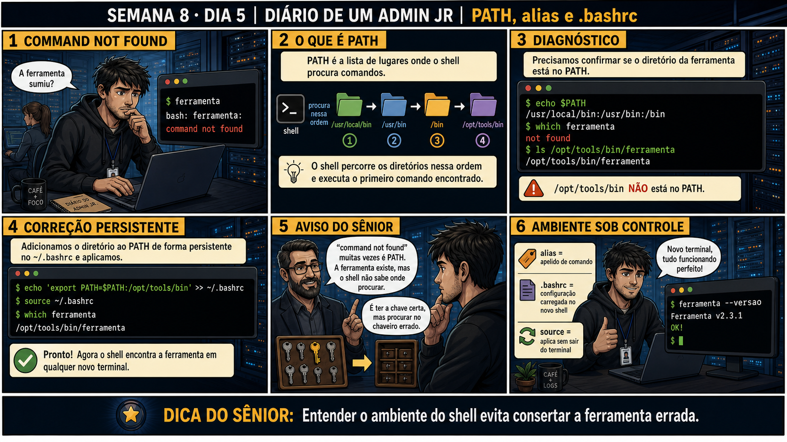

DIARIO DE UM ADMIN JR. | FASE 1 — LINUX, DO BÁSICO AO AVANÇADO
🔗 Conecta com a semana inteira: cut, sed, awk, pipes — todas essas ferramentas
rodam DENTRO de um ambiente de shell. Hoje você entende esse ambiente por dentro: por que um comando às vezes
"some" mesmo estando instalado, e como personalizar de forma permanente.
🔓 Privilégio de hoje: diagnosticar e corrigir problemas de PATH e configurar
.bashrc. Você ganha o entendimento do ambiente de shell completo — a base necessária antes de escrever
scripts na Semana 9.
Semana 8 · Dia 5 | Nível Júnior
Ambiente de Shell: PATH, Alias, .bashrc
entender o ambiente do shell evita consertar a ferramenta errada
ANTES DE ALTERAR, OBSERVE. DEPOIS DE ALTERAR, VALIDE.

1. O chamado
Um comando que funcionava ontem agora diz command not found. Seu primeiro
pensamento é que a ferramenta "sumiu" — mas na maioria das vezes, ela não sumiu, o shell só não sabe mais
onde procurar por ela.
💡 Passa o mouse nas palavras destacadas pra ver uma dica rápida — clica se quiser a explicação completa com analogia.
2. O sênior te conta
Sexta-feira, fechando a Semana 8
A semana inteira foi sobre ferramentas que rodam DENTRO de um ambiente de shell — cut, sed, awk, pipes.
Hoje você entende esse ambiente por dentro, fechando o bloco de ferramentas de texto antes de partir pra
automação de verdade na Semana 9.
O chamado que me ensinou essa lição foi frustrante antes de ficar simples. Um comando que eu usava todo
dia, de repente, deu command not found. Meu primeiro pensamento foi de pânico: "sumiu, foi
desinstalado por engano, preciso reinstalar". Passei uma hora tentando reinstalar a ferramenta, sem
sucesso, cada vez mais confuso, porque o instalador dizia que ela já estava presente.
Um sênior mais experiente me fez três perguntas simples que eu não tinha pensado em fazer:
echo $PATH — quais pastas o shell está mesmo procurando? which ferramenta — o
shell encontra o comando com o PATH atual? ls na pasta onde o binário deveria estar — ele
ainda existe fisicamente no disco? A resposta caiu como um balde de água fria: o arquivo estava lá,
intacto, em /opt/tools/bin. Só que essa pasta simplesmente não estava listada no
PATH — talvez removida sem querer numa edição anterior do .bashrc.
command not found quase nunca significa "a ferramenta sumiu". Significa "o shell não sabe
mais onde procurar". São dois problemas completamente diferentes, com soluções completamente diferentes
— reinstalar resolve o primeiro, mas é inútil pro segundo. Hoje você pratica exatamente essa
investigação, e a correção permanente: adicionar a pasta faltante ao .bashrc, não só
remendar a sessão atual com um export que desaparece no próximo terminal.
3. Decodificador de conceitos
Clica em qualquer termo pra ver a definição completa e uma analogia do dia a dia:
4. Ferramentas e leitura da evidência
Comando
O que observar e por que importa
echo $PATH
Mostra as pastas, em ordem, onde o shell procura por comandos.
which ferramenta
Confirma se o shell consegue encontrar o comando com o PATH atual.
ls /opt/tools/bin/ferramenta
Confirma se o arquivo ainda existe fisicamente, mesmo se o PATH não o alcança.
$ echo $PATH
/usr/local/bin:/usr/bin:/bin
$ which ferramenta
not found
$ ls /opt/tools/bin/ferramenta
/opt/tools/bin/ferramenta
$ echo 'export PATH=$PATH:/opt/tools/bin' >> ~/.bashrc
$ source ~/.bashrc
$ which ferramenta
/opt/tools/bin/ferramenta
5. Laboratório guiado — pegue na mão, comando por comando
Segurança: execute os testes apenas em VM descartável e confirme nomes de discos, hosts e arquivos antes de cada comando.
Ação: veja o PATH atual e identifique todas as pastas listadas.
$ echo $PATH
Resultado esperado: lista de pastas separadas por dois-pontos, algo como /usr/local/bin:/usr/bin:/bin.
Por que fizemos isso: saber ler essa lista é o primeiro passo de qualquer investigação de "command not found" — sem isso, você está adivinhando, não diagnosticando.
Cilada comum: não notar a ordem das pastas — o shell para na primeira ocorrência do comando, então a ordem importa quando existem duas versões da mesma ferramenta em pastas diferentes.
Ação: crie um script de teste fora do PATH e reproduza o sintoma do chamado.
Resultado esperado: "command not found", reproduzindo exatamente o sintoma da história de hoje.
Por que fizemos isso: reproduzir o erro de propósito, num script que você mesmo criou, é o que te deixa pronto pra reconhecer esse padrão exato quando aparecer de verdade num chamado real.
Cilada comum: confundir "arquivo não executável" (falta chmod +x) com "problema de PATH" — são causas diferentes pro mesmo tipo de erro, sempre confirme as duas possibilidades.
Ação: adicione essa pasta ao PATH de forma permanente e aplique sem reiniciar o terminal.
Resultado esperado: "ola" impresso na tela — o script agora executável só pelo nome, sem caminho completo.
Por que fizemos isso: essa é exatamente a correção permanente que resolveu o chamado da história — editar .bashrc, não só remendar a sessão atual com export solto.
Cilada comum: rodar só o export no terminal, sem editar o .bashrc — funciona até você fechar essa sessão, e o problema "volta" no próximo terminal.
🧑🏫 Aqui entra o Mentor (em breve): se depois do source o comando ainda não for encontrado, este é o ponto onde o chat com o Sênior-IA vai ajudar a diagnosticar.
Ação: crie um alias simples e teste depois de aplicar.
Resultado esperado: ll funcionando como atalho pra ls -la, sem precisar digitar o comando completo.
Por que fizemos isso: alias é outro tipo de personalização permanente do .bashrc — junto com PATH, fecha o entendimento completo do ambiente de shell antes da Semana 9.
Cilada comum: criar um alias com o mesmo nome de um comando já existente sem perceber — isso pode sobrescrever silenciosamente o comportamento esperado daquele comando.
Ação: documente sintoma, diagnóstico, correção aplicada, validação final — fechando a Semana 8.
# anote no seu diário de bordo:
Sintoma: command not found em meuscript.sh
Diagnóstico: echo $PATH não incluía ~/scripts_teste; which confirmou; ls confirmou arquivo existia
Correção: export PATH adicionado ao .bashrc + source
Validado: meuscript.sh roda normalmente agora
Resultado esperado: registro completo reproduzindo o painel 6 da prancha de hoje.
Por que fizemos isso: esse registro é o modelo exato de investigação que separa "consertei" de "entendi por que quebrou e corrigi a causa raiz de forma permanente".
Cilada comum: documentar só "corrigido", sem registrar o diagnóstico — sem isso, o próximo "command not found" vai exigir reinvestigar tudo do zero.
6. Antes de ver as opções — tenta responder
🧠 Recall ativo: o que é PATH, e o que acontece quando uma pasta necessária não está
listada nele?
PATH é a lista de
pastas onde o shell procura comandos, em ordem. Se a pasta da ferramenta não está listada, o shell
simplesmente não a encontra, mesmo que o arquivo exista fisicamente no disco —
command not found
quase sempre é isso, não a ferramenta ter sido apagada.
QUESTÃO 1 de 3
7. Questão comentada — clica numa alternativa
Um comando que funcionava antes agora dá "command not found". Qual é a
investigação correta?
💡 Analogia do Sênior para Fixar: A variável '$PATH' é a lista de endereços onde o sistema procura ferramentas: quando você digita 'nginx', o shell varre as pastas do PATH até achar o executável.
QUESTÃO 2 de 3 — cenário de erro real
7.1 O arquivo existe em /opt/tools/bin, mas não está no PATH — como corrigir de forma permanente?
Depois de confirmar que /opt/tools/bin não está listado no PATH, você precisa
corrigir isso de forma que funcione em qualquer terminal novo, não só na sessão atual.
Qual é a correção correta e permanente?
💡 Analogia do Sênior para Fixar: O arquivo '~/.bashrc' é a sua receita de café personalizada: toda vez que você abre uma janela de terminal, ele carrega seus aliases e variáveis de ambiente automaticamente.
QUESTÃO 3 de 3 — detalhe que confunde todo iniciante
7.2 "Depois de editar .bashrc, preciso fechar e abrir o terminal de novo pra funcionar?"
Um colega edita o ~/.bashrc e assume que a única forma de aplicar a mudança é fechando e
reabrindo o terminal inteiro.
Existe uma forma mais rápida?
💡 Analogia do Sênior para Fixar: O comando 'export VARIAVEL=valor' é como colocar o crachá no peito: faz com que todos os novos processos e scripts filhos herdem aquela configuração.
8. Procedimento profissional
Confirme com echo $PATH quais pastas o shell está procurando.
Use which pra confirmar se o comando é encontrado com o PATH atual.
Se não encontrado, confirme com ls se o arquivo ainda existe fisicamente.
Corrija de forma permanente, adicionando ao ~/.bashrc, não só na sessão atual.
Aplique com source ~/.bashrc e valide com which de novo.
Prevenção
Mantenha o .bashrc de servidores compartilhados sob controle de versão (git), com
histórico claro de cada linha adicionada e por quê. Isso torna trivial descobrir quando e por que uma
pasta essencial desapareceu do PATH, em vez de investigar às cegas como na história de hoje.
9. Validação e encerramento
PATH foi verificado antes de assumir que a ferramenta tinha sumido.
which e ls confirmaram se era problema de PATH ou de arquivo realmente ausente.
A correção foi aplicada permanentemente via .bashrc, não só na sessão atual.
source foi usado pra validar sem precisar fechar o terminal.
Rollback e limites
Rollback de uma mudança no .bashrc é remover a linha adicionada e rodar source de
novo — simples, já que o arquivo é só texto. O cuidado real é não adicionar caminhos duvidosos ao PATH sem
confirmar sua origem.
💡 Sobre repetição espaçada: "não confunda sintoma com causa" fecha a Semana 8
do mesmo jeito que apareceu com iostat (Semana 5) — "command not found" parece ser sobre a ferramenta, mas
na maioria das vezes é sobre o ambiente. O Anki vai conectar os dois.
10. Resposta final
Alternativa correta: B. Nesta aula, a decisão correta foi verificar
echo $PATH, testar which, e confirmar com ls se o arquivo ainda existe. O ponto central do caso é
este: command not found quase sempre é PATH, não é a ferramenta ter sumido.
🔓 O que você desbloqueou hoje
Compreensão completa do ambiente de shell, fechando a Semana 8 e todo o bloco
de ferramentas de texto. Semana 9 abre a automação em bash de verdade — seu primeiro script real,
construído sobre tudo que você já domina.